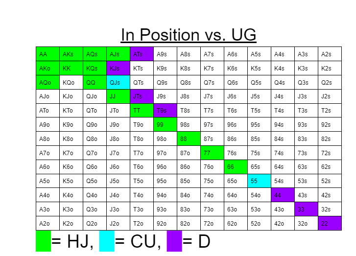
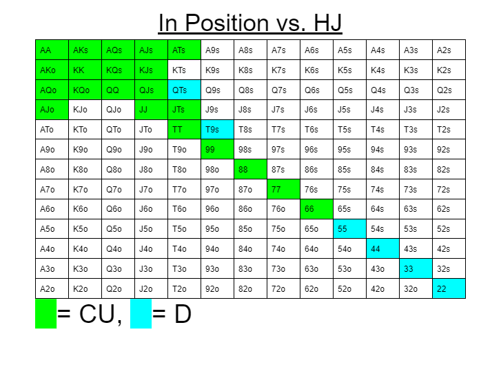
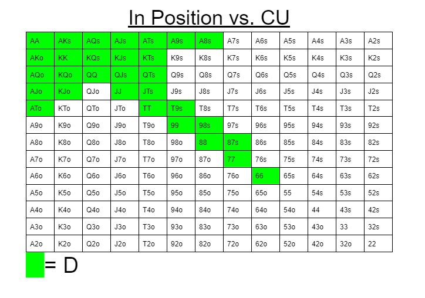
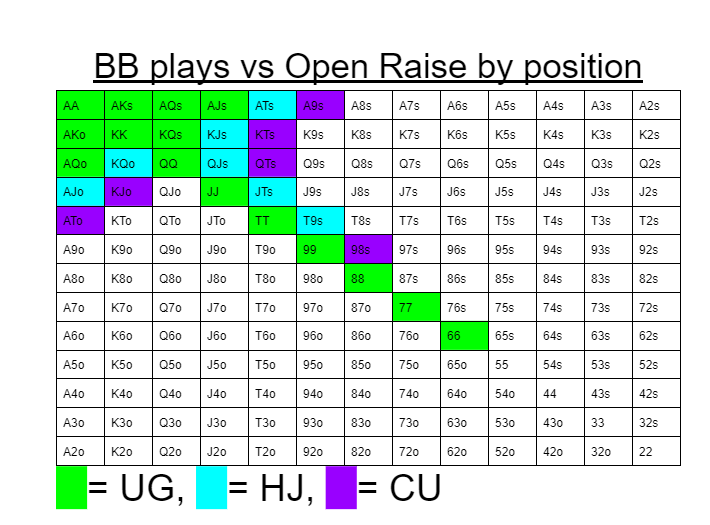
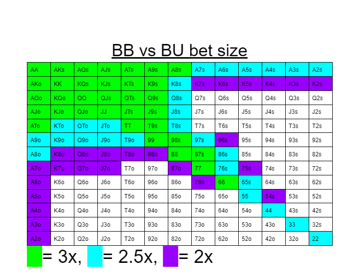
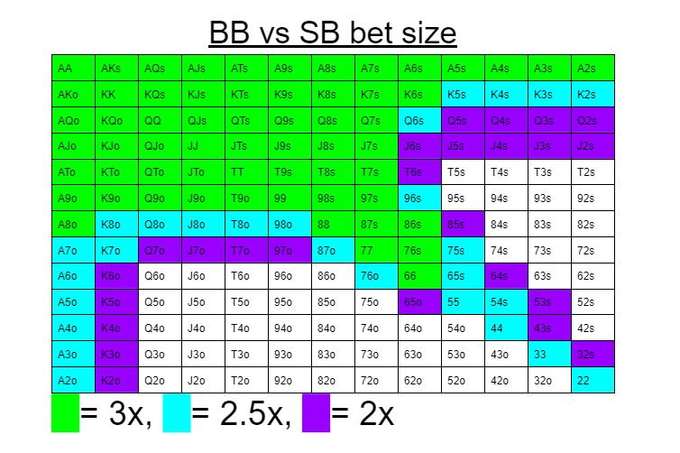

If you want to call an open raise made by a specific position follow the charts below based on your position vs the Open Raise position.
Calling UG's Open Raise

Calling UG's Open Raise

Calling CU's Open Raise

If you look at the charts, you notice that the number of hands played, no matter what position open raised, doesn't change much. The kind of hands is more so what changes. Calling against a UG has cards like 44 or 22. Then against CU, there is no cards below 66, but there are more cards at the top, like KTs or KQo. This happens because cards like 33 and 22 have nut potential and have a chance at beating top pair hands that the UG might open Raise with. The nut potential with lower cards doesn't work as well against positions like the CU since there is a chance they might already have weaker cards. That is why you would rather have much stronger cards.
Calling from SB?
For SB, just like never limping, 99% of the time, you don't call because you will be out of position. Since our range is capped, we are easier targets to be bullied by 3bettors(a player who raises a raise). Most of the time in SB, you either want to fold or 3bet.
Calling from BB
From the BB, calling opens is played a bit differently.

Since we will still be out of position if we call we only want to play good hands and much tighter ranges.
When playing against the BU and the SB the way we call depends on how much the villian bets.

We end up playing quite a few hands here since the smaller the open is the better our pot odds are and the more hands we can play with. As the BU bets smaller and smaller we can play with more hands since the price is cheap enough to be able to call with.

In this case, BB has position over SB so that is already a plus side. Just like agasint the BU, BB can play way more hands the cheaper it is to call.